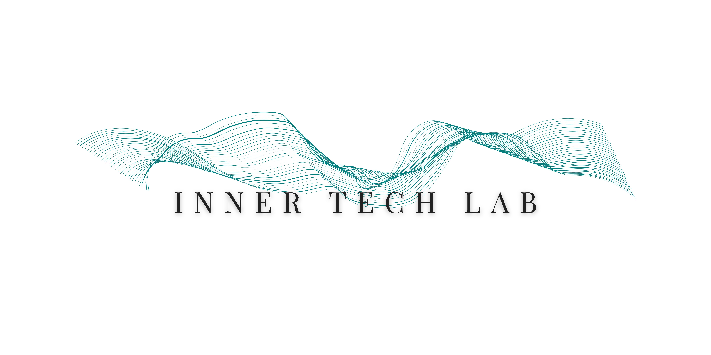
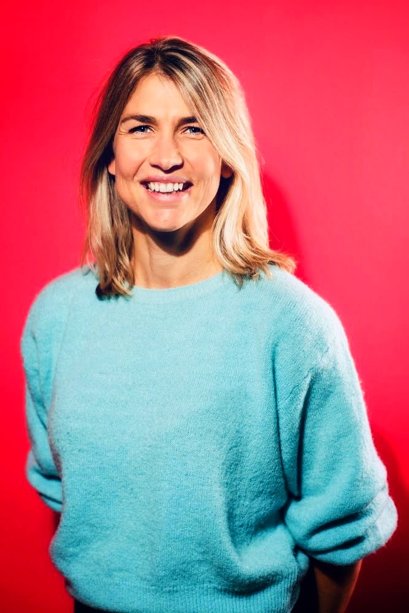

Things are constantly moving in my work. You'll find all current projects, writings, and ways to connect gathered in one place.
Everything I'm currently working on — breathing analysis, Mental Vacations, The Breath Path, The Missing Piece, writings, and more:
→ Go to linktreeI'm a failed scientist. At least, that's how it felt when I walked away from finishing my PhD.
But like many high-performers, I didn't struggle because my mind was weak. Au contraire — it's fast, analytical, with exceptional processing power. And that was precisely the problem.
No matter how great life looked on paper, my system was restless. As if there was always something to do, to figure out, to perfect. A million ways to write that paper. Endless possibilities to shape my life. Analysis paralysis at its finest — until my battery died.
I did what most overthinkers do. I researched. I read. Listened to podcasts. Tried to understand my way out. It didn't work.
Across fields and industries, I kept seeing the same pattern: highly capable people who functioned exceptionally well, but whose nervous system never truly downshifted, and felt persistently off as a result.
Not a mindset problem. A regulation problem.
Instead of trying to "calm the mind with the mind," I began studying how calm and clarity actually emerges — bottom up. Through nervous system science. Breathing physiology. Neuroplasticity.
Today, this is what I do. Using real-time CO₂ monitoring (capnography), I make visible how you breathe — and how those patterns quietly shape your resilience capacity. Not generic advice like "breathe slower," but individualized data that explains why your system won't downshift, and what it needs to regain balance.
It's the only autonomic function you can consciously influence. The physical lever that shifts your biology in real-time. Moreover, we breathe over 20.000 times a day — it's the most frequent input your system receives.
So let's talk. Because when unstoppable minds understand how to regulate from the inside out, the body stops being a bottleneck and becomes the mind's greatest ally. That is where your full potential finally comes through.
Curious whether breathing education or analysis could contribute to your own, your team's, or your clients' wellbeing?
Explore my current work →